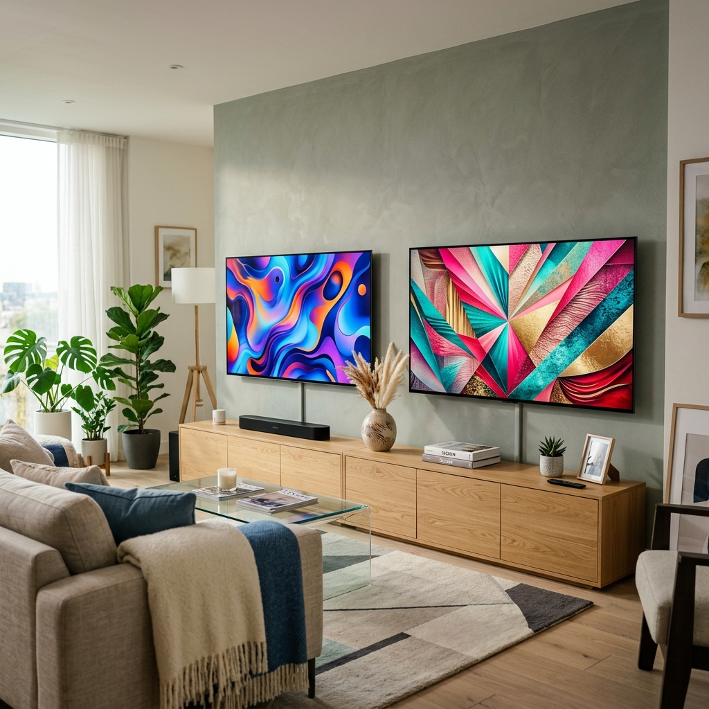
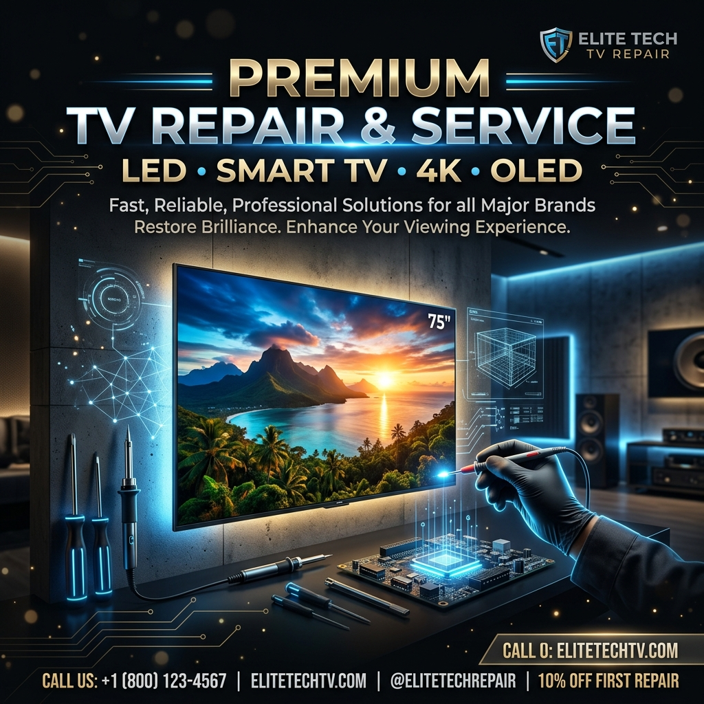

SONY TV Service Center | Quick Reliable Services
A top-of-the-line television brand providing reliable service you expect... A commitment to round-the-clock customer experience and a money-where-it-counts promise. We are an authorized service center providing high-quality services for all your SONY TV televisions.

For SONY TV Service Center Repair related query calling us
1800-569-1141
We provide all types of TV Repair, Services & Installation
Our Services includes exclusive TV Repair, Panel Replacement, Motherboard Repair, and Installation.

A commitment to round-the-clock customer experience and a money-where-it-counts promise. A dedicated focus and a dedicated support team are the core of our business.
- SONY TV LED TV Repair
- SONY TV Smart TV Repair
- SONY TV TV Panel Replacement in Lucknow
- SONY TV TV Installation
- SONY TV TV Motherboard Repair
- SONY TV TV Service Center
- SONY TV TV Service Center in Lucknow
- SONY TV LED TV Repair
- SONY TV Service Center Lucknow
- SONY TV Service Center in Lucknow
- SONY TV Service Center near me
- SONY TV TV Service Center
- SONY TV Service Center Helpline No
- SONY TV Service Center Contact Number
- SONY TV Service Center Customer Care Number
- SONY TV Toll Free Number
- SONY TV Contact Number
- SONY TV Customer Care Number
- SONY TV Customer Care Toll Free Number
- SONY TV TV service center
- SONY TV Customer Care Number